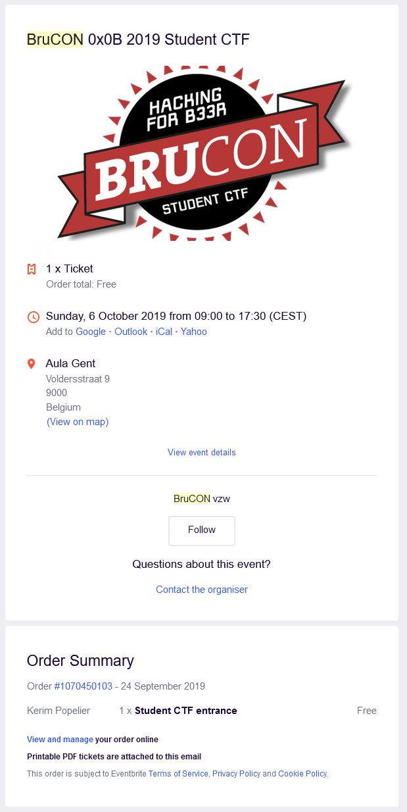

Brucon student CTF
Date and duration:
6 October 2019
09:00 - 17:30
Proof:

Description
Brucon Student CTF is een capture the flag event georganiseerd om Brucon te promoten. Ik heb deelgenomen aan deze CTF in team. Mijn teamgenote waren Brend Lambert, Bert Van Mulders, Valmir Mulaj, Mattijs Step en Elias Vandewalle.
Het doel van een CTF is om "vlaggen" te vinden door verschillende challenges op te lossen. Het team met de meeste vlaggen wint de CTF.
De onderwerpen van de challenges gaan van malwareontleding tot website hacking tot lockpicking.
Daar ik een lockpick set thuis heb en hier al wat geoefend mee was heb ik direct begonnen aan deze challenges. Deze waren enorm leuk en terwijl het een beetje zoeken was in het begin ging het steeds beter. Zo lukte het mij ook om als eerste op de CTF de "unofficial" challenge met handboeien op de rug te winnen. Jammer genoeg was dit iets geavanceerder dan verwacht en kreeg ik hier dus geen flag voor. Wil een goede skill om mee te nemen? Of mag ik dit niet zeggen? Oops
Om af te sluiten, dit was een heel leerzame en leuke dag.